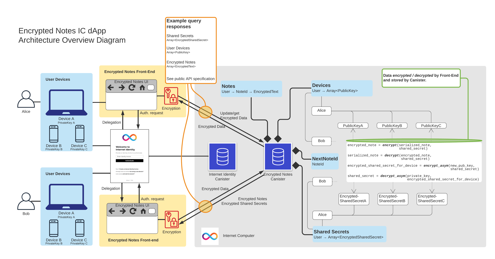

加密笔记 Dapp
Encrypted Notes是一个实验性的dapp，用于以短文本的形式创作和存储机密信息。 用户可以通过通过链接验证的任意数量的自动同步设备访问他们的笔记:https://smartcontracts.org/docs/ic-identity-guide/what-is-ic-identity.html[Internet Identity]。 由于 dapp 前端执行的端到端加密，用户不需要信任 dapp 的后端。
你可以试一下链接dapp部署在IC上。
主意
我们想构建一个纯粹在 IC 上运行的简单（但不是太简单）dapp 的示例。 此示例依赖于 IC 的_web-serving_ 和_storage capabilities_。 我们专注于示例 dapp 的以下两个关键特性:(1) 客户端，_端到端加密_和 (2) _多用户_和_多设备_支持。
为了展示 IC 作为开发此类 dapp 的平台的潜力，我们使用两个不同的容器开发套件 (CDK) 实现了这个示例。 Motoko CDK 允许开发人员使用以下链接实现基于参与者的 dapp:https://smartcontracts.org/docs/language-guide/motoko.html[Motoko] 语言。 Rust CDK 允许在链接中实现 dapp:https://smartcontracts.org/docs/rust-guide/rust-intro.html[Rust]。 在这两种情况下，容器都被编译成 WebAssembly 文件，然后部署到 IC 上。
方法
Encrypted Notes 的基本功能包括两个主要组件。
首先，我们重用了一个（非加密）dapp的代码，叫做IC-Notes。 特别是 IC-Notes 依赖Internet Identity (II) canister 进行用户身份验证，这种方法也是 由加密笔记继承。 出于开发目的，我们部署了 II 容器的本地实例（以及加密笔记的本地实例）； 在将 Encrypted Notes 部署到主网上时，II 的真实实例用于身份验证。
其次，我们为笔记内容启用了客户端端到端加密，从另一个名为链接的现有 dapp 中借用了解决方案:https://github.com/timohanke/icvault[IC-Vault]。我们的加密笔记 dapp 遵循 IC-Vault 的方法来支持管理多个设备。
在本文档中讨论的容器的上下文中，设备不一定是单独的物理设备，而是逻辑实例设备，例如 Web 浏览器，具有自己的本地数据存储。例如，我们将在同一台笔记本电脑上运行的两个 Web 浏览器视为两个独立的设备；这些浏览器会生成自己的加密密钥。相比之下，II 容器依赖于硬件生成的加密密钥，仅区分硬件设备。
为了支持每个用户使用多个设备，IC-Vault 采用了设备管理器，这是一个可以在与用户关联的所有设备之间安全地同步设备特定密钥的容器。本文档的其余部分重点介绍以类似方式实现设备管理器但作为其主容器的一部分的 Encrypted Notes 容器。
更多细节和用户故事，请参考README file。

##笔记管理
-
用户在前端链接到II，为用户提供了一个可用于调用API查询和更新的主体。
-
在内部，我们存储
Principal → [Notes]形式的映射 和一个“计数器”。 -
counter存储容器创建的笔记数（跨所有主体）。 -
方法
create向其主体的条目添加注释（如果存在）， 或使用note_id == counter将主体添加到映射中，然后递增counter。 -
方法
update为调用者的 Principal 和提供的note_id提取一个便笺，并用提供的text替换它（此text假定由前端加密）。 -
方法
delete在地图中找到具有给定note_id的笔记并将其删除。 为了确保笔记 ID 始终是全局唯一的，我们不会减少counter。
密码学
-
笔记的加密完全是客户端的。但是，我们的示例 dapp 仍然无法抵御可能是恶意节点提供商的潜在数据泄露攻击。例如，攻击者可以推断出特定用户有多少笔记，用户活动统计等。因此，请仔细阅读disclaimer 在使用此 dapp 中的任何代码或模式之前。
-
回想一下，在我们的定义中，设备不一定是单独的物理设备，而只是具有独立本地存储的 Web 浏览器实例。
-
dapp 使用三种不同的密钥:
-
对称 AES-GCM secret key:用于加密给定主体的注释。主体的注释存储在使用此密钥加密的 Encrypted Notes 容器中。因此，dapp 的前端需要知道这个密钥才能解密来自该用户的笔记，并发送加密的笔记以存储在 Encrypted Notes 容器中。
-
设备 RSA-OAEP_public key_:用于加密主体的对称 AES_secret key_。加密的密钥存储在容器中，用于注册到主体的每个设备。相同的密钥用于使用该设备的不同主体。
-
设备 RSA-OAEP private key:用于解密存储在 Encrypted Notes 容器中给定主体的对称 AES secret key。一旦前端解密了密钥，它就可以使用这个密钥来解密存储在加密笔记容器中的笔记。
-
-
我们存储一张地图的形式:
Principal → (DeviceAlias → PublicKey, DeviceAlias → CipherText) -
此地图用于管理用户设备，如下所述。
-
要注册设备，前端会生成设备别名、公钥和私钥（保存在本地存储中）。
-
添加设备:
-
*设备注册:*如果这个身份是已知的，一个新的设备将首先保持不同步；此时，只有此设备的
alias和publickey将添加到 Encrypted Notes 容器中。 -
设备同步: 未同步设备获得本II所有未同步设备列表后，将在每个未同步设备的公钥下加密对称AES_secret key。之后，未同步设备获得加密的对称 AES_secret key，对其进行解密，然后使用它来解密存储在 Encrypted Notes 容器中的现有笔记。
-
-
一旦通过 II 认证:
-
如果此身份未知，则前端会生成一个对称的 AES_secret key并使用自己的公钥对其进行加密。然后前端调用
seed(publickey, ciphertext)，将该密文及其关联的“publickey”添加到地图中。 -
如果用户想注册后续设备，前端调用
register_device，传入该设备的alias和publickey。然后前端为它需要注册的所有设备调用submit_ciphertexts([publickey, ciphertext])。这允许注册设备提取和解密 AES 密钥以加密和解密用户笔记。
-